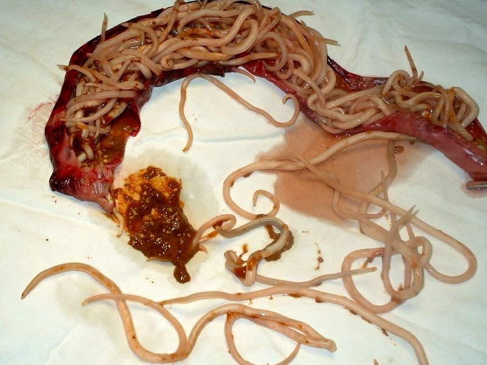
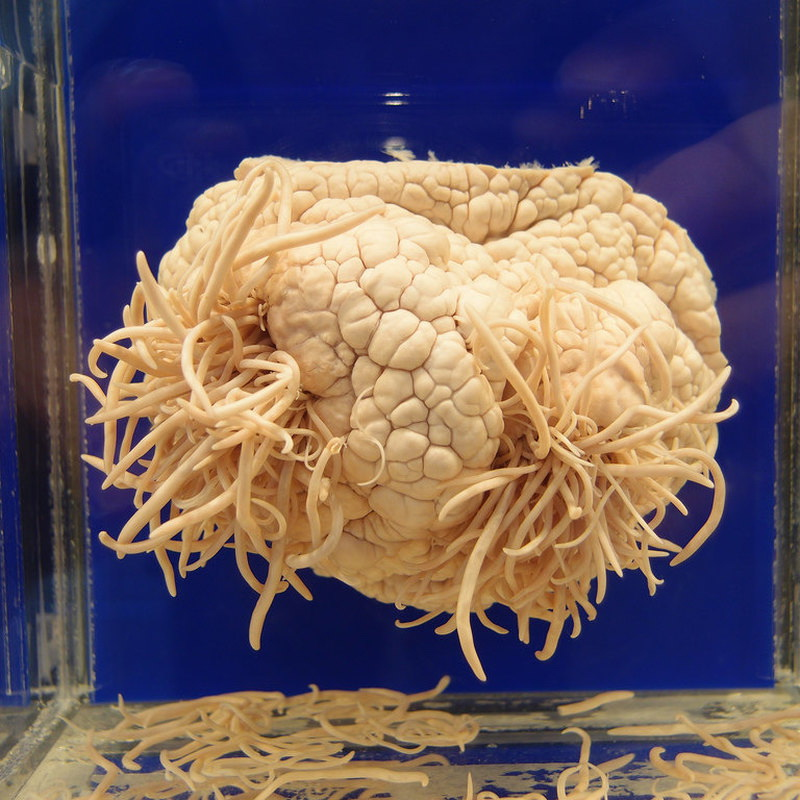

80% aller Krankheiten werden durch parasitäre Infektionen verursacht. Wie wird man nicht zum Futter von Helminthen?

“Die Infektion mit Parasiten ist mit der Entwicklung einer ganzen Reihe von Krankheiten behaftet: Diabetes, Bluthochdruck, verschiedene Arten von Krebs, Unfruchtbarkeit und viele andere. Der Grund ist, dass die Abfallprodukte von Parasiten Giftstoffe enthalten, die zur Immunschwäche führen“ – teilten Vertreter der Weltgesundheitsorganisation bei einem Treffen mit Reportern am 25. Dezember 2019 mit.
Barbara Fischer Professorin, Dr. med. und Parasitologin über die Verbindung von parasitären Infektionen und verschiedenen Krankheiten .
Das Thema des heutigen Gesprächs ist etwas ungewöhnlich, aber nicht weniger wichtig. Ich gebe Ihnen zu allerletzt einfach offizielle Statistiken an:
-
• Die Weltgesundheitsorganisation berichtet, dass etwa 4,5 Milliarden Menschen an verschiedenen parasitären Krankheiten leiden - mehr als 60% der Weltbevölkerung
-
• Jeder dritte Europäer ist mit Parasiten infiziert
-
• Jedes Jahr sterben 15-17 Millionen Menschen an parasitären Infektionen
-
• Helminthiasis - die dritthäufigste Krankheit der Welt
Das heißt, mit hoher Wahrscheinlichkeit leben Parasiten auch in Ihrem Körper. Und selbst wenn sie nicht leben, ist die Wahrscheinlichkeit einer Infektion sehr hoch.
Intestinale askariasis Askariden
Askariden
Ein lebender Organismus kann ohne Silizium nicht überleben – das ist bereits eine bekannte Tatsache. Sobald sich Parasiten im Körper vermehren, beginnen sie zunächst, Silizium zu essen. Und ohne Silizium wird Kalzium - das Baumaterial der Knochen - nicht mehr absorbiert. Genau das ist die Ursache solcher Krankheiten, wie – Radikulitis, Osteochondrose, Polyarthritis.
 Trichomonaden
Trichomonaden
Die interessanteste Entdeckung in der Parasitologie wurde 1989 gemacht und erhielt die Bezeichnung „Die Eigenschaft der Trichomonaden, in eine Tumorzelle wiedergeboren zu werden“. Es stellt sich heraus, dass Krebs - eine durch Parasiten verursachte Krankheit ist. Und die Hauptursache dafür sind Trichomonaden.
Die Erreger aller Krankheiten sind somit Protozoen, Pilze und Helminthen.
“Übergewicht und Helminthen hängen wahrscheinlich überhaupt nicht voneinander ab“, Denken Sie? Auch hier müssen wir euch enttäuschen.Für Menschen, die beispielsweise mit Bandwürmern infiziert sind, wird Fett zum einzigen Schutz vor toxischen Wirkungen.
Ein von Parasiten infiziertes Delfinhirn. Glauben Sie, dass es so etwas nicht bei Menschen gibt?...Heutzutage haben fast alle Stadtbewohner Würmer oder Pilze. „Einige von euch werden sich jetzt fragen, ob es vielleicht ganz normal ist, wenn man sie hat?“, - Nein, das ist nicht normal!
Wir Parasitologen haben lange Zeit Alarm geschlagen. Das Hauptproblem ist das Fehlen eines Mittels, das alle möglichen Arten von Parasiten einer Person ausrotten könnte, ohne die Gesundheit der jeweiligen Person selbst zu beeinträchtigen.
Vor wenigen Tagen wurde die letzte klinische Untersuchung eines neuen Medikaments – durchgeführt. Ich kann jetzt schon mit Sicherheit sagen, dass dies ein Durchbruch in der Behandlung von parasitären Infektionen ist. Neben der vollständigen Rehabilitation zeigte positive Wirkungen in Form der Reinigung des Körpers von Schlacken und Toxinen. Darüber hinaus hat es eine positive Wirkung auf die Organe des Magen-Darm-Trakts, stimuliert den Gallenabfluß, beseitigt Geschwüre, Gastritis und vielen chronischen Krankheiten; verbessert den Zustand der Haut, Haare und Nägel; Normalisiert den Stuhlgang; beseitigt Allergien.
Kommentare:
Kommentieren